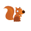
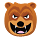
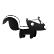

Pięć zwierzaków, jedna wyrzutnia i niedźwiadki do strącenia. Stara dobra gra wraca do przeglądarki.
Przechodź kolejne etapy albo zajrzyj do dowolnej odzyskanej planszy. Najlepsze wyniki zapisują się w tej przeglądarce.
Suwakami ustaw kąt i moc. Możesz też odciągnąć zwierzaka na wyrzutni. Kropki pokazują przewidywany lot.
Naciśnij „Atakuj!” lub spację. W locie użyj zdolności przyciskiem lub klawiszem E. Skunks leci bez dodatkowej zdolności.
Uderzaj bezpośrednio lub przewracaj konstrukcje. Ocalałe zwierzaki dają bonus. Na planszach z armatą chroń trzy życia wyrzutni.
Port w HTML i JavaScript, przygotowany na podstawie analizy wersji J2ME 1.5. Korzysta ze 105 oryginalnych grafik i danych 50 plansz.
To grywalna wersja rozwojowa. Reguły strzału, obrażeń i punktacji pochodzą z oryginału. Kontakty fizyczne, rozpad połączonych konstrukcji, kamera i sterowanie są odtworzone na potrzeby przeglądarki; zachowanie nie jest jeszcze potwierdzone porównaniem z działającą wersją Java.
Oryginał: CT Creative Team / PTGame.eu. Grafiki i nazwa pochodzą z oryginalnej gry. Port nie uruchamia usług SMS ani dawnego sklepu.